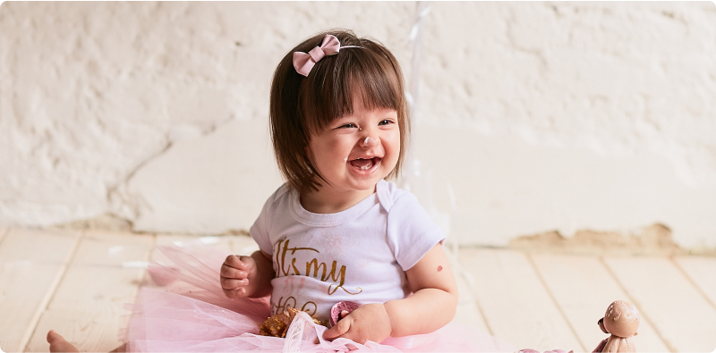
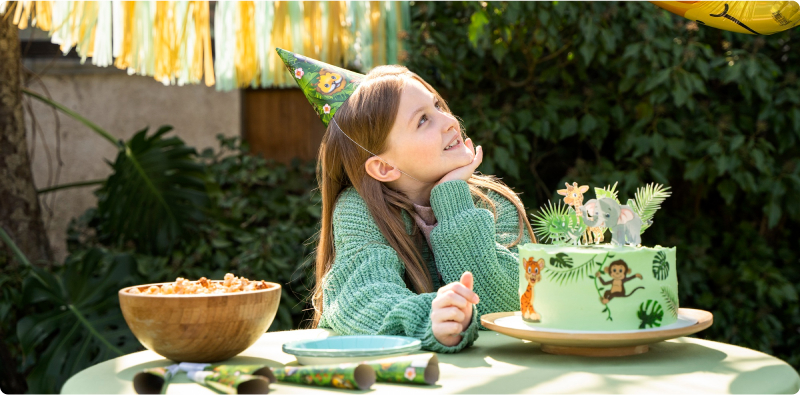

Making Memories:
Photographing Children's Birthday Parties
Children's birthday parties are vibrant affairs filled with laughter, excitement, and endless energy. As parents, we want to preserve these precious moments and create lasting memories for our little ones to cherish for years to come. One of the best ways to do this is through photography. Capturing the joy, wonder, and innocence of childhood on film allows us to freeze time and relive those magical moments again and again.
The Art of Capturing Joy
Photographing children's birthday parties is about more than just snapping pictures; it's about capturing the essence of childhood – the pure, unadulterated joy and excitement that radiates from every smile and giggle. To truly capture these moments, photographers must have a keen eye for detail and a deep understanding of child psychology. They must be able to anticipate spontaneous moments and react quickly to capture them on film.
Preserving Precious Memories
Every birthday party is a unique celebration filled with special moments that deserve to be preserved. From blowing out the candles on the cake to opening presents with friends, each moment is a precious memory that parents will want to treasure forever. A skilled photographer knows how to capture these moments in a way that is both authentic and timeless, allowing families to look back on them with fondness for years to come.
Creating Lasting Keepsakes
In today's digital age, it's easier than ever to capture and share memories with friends and family. However, there's something truly special about having physical prints to hold in your hands and display in your home. A professional photographer can provide families with high-quality prints and photo albums that serve as lasting keepsakes of their child's special day. These tangible mementos become treasured family heirlooms that can be passed down from generation to generation.
Tips for Photographing Children's Birthday Parties
- Capture Candid Moments: The best birthday party photos are often the ones taken when children are unaware of the camera. Be ready to snap pictures at a moment's notice to capture spontaneous moments of joy and laughter.
- Focus on the Details: Pay attention to the small details that make each birthday party unique, from the decorations and party favors to the expressions on children's faces as they play games and enjoy treats.
- Get on Their Level: To capture genuine expressions and emotions, get down on the same level as the children. This allows you to connect with them on their level and capture more intimate and authentic moments.
- Be Patient and Flexible: Children can be unpredictable, and birthday parties are no exception. Be patient and flexible, and be prepared to adapt to changing circumstances to get the best possible shots.
Conclusion
Photographing children's birthday parties is both a privilege and a responsibility. As photographers, we have the opportunity to capture the magic of childhood and preserve it for future generations to enjoy. By focusing on capturing candid moments, preserving precious memories, and creating lasting keepsakes, we can ensure that every birthday party is a celebration to remember.